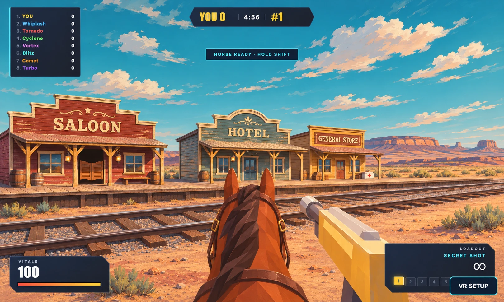

Red Rock Range
Compare the depot street and sandstone arch from horseback. Both pairs were captured from the same positions in a running match.
Revised gameOriginal game
The paintover

Generated from the original depot street screenshot. The slider above shows the playable result.
Open the game · Sunken Reef study · Mycelium Grove study